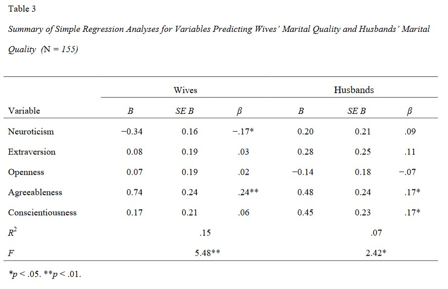
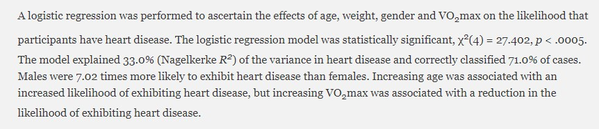
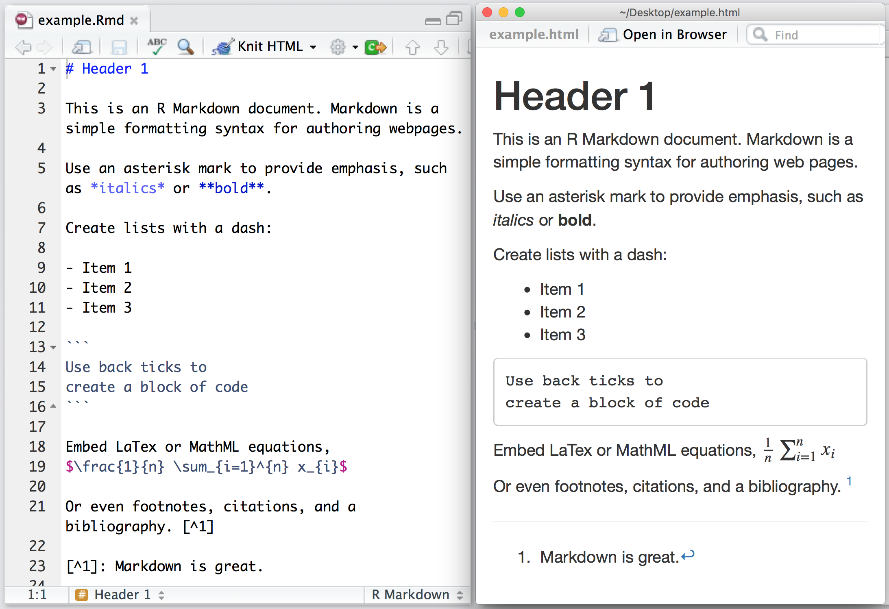
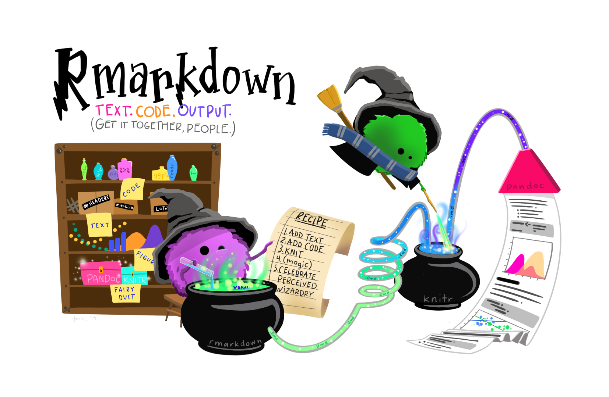
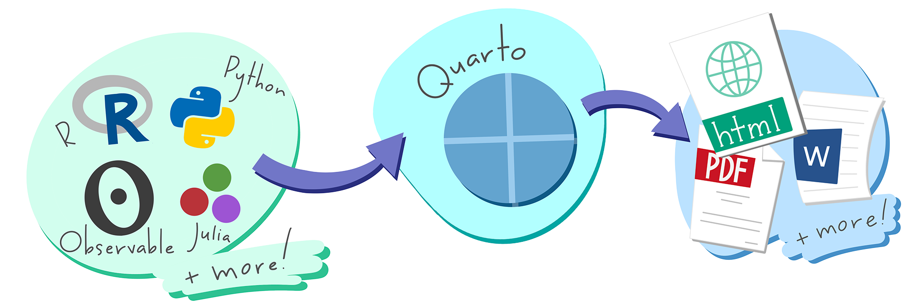

Analisis Regresi dan Penyajian Hasil (Versi Lengkap)
Garis Besar Hari Ini
- Berbagai paket untuk tabel
- Regresi Linear Sederhana di R
- Prediktor kontinu (satu dan beberapa)
- Prediktor kategorikal
- Regresi Logistik Biner di R
- Prediktor kontinu
- Prediktor kategorikal
- (jika waktu memungkinkan) Menulis analisis dan laporan Anda dalam satu tempat dengan Quarto.
Catatan: untuk sesi ini, kita akan memprioritaskan apa yang dilakukan kode dan bagaimana menginterpretasikan output, sehingga akan ada lebih sedikit live coding dari biasanya.
Buka Proyek Anda - Cara yang (Mungkin) Lebih Mudah
Buka folder tempat Anda menyimpan proyek untuk workshop ini
Cari file dengan ekstensi
.Rproj- ini adalah file proyek R yang menyimpan semua informasi tentang proyek Anda.Klik dua kali pada file tersebut. Rstudio akan terbuka dengan proyek Anda dimuat! Ini seharusnya lebih mudah untuk memastikan bahwa Anda memuat proyek yang benar saat membuka Rstudio.
Instal dan Muat Paket Tambahan yang Kita Butuhkan Hari Ini
Ketik baris berikut di konsol R Anda (bagian kiri bawah). Ketik satu per satu.
install.packages("apaTables")install.packages("huxtable")install.packages("gtsummary")install.packages("car")
Buat skrip R baru dengan nama
session-5.RTempelkan baris-baris berikut ke dalam skrip:
Muat Data untuk Hari Ini!
# membaca CSV dengan data WVS
wvs_cleaned <- read_csv("data-output/wvs_cleaned_v1.csv")
# Konversi variabel kategorikal ke faktor
columns_to_convert <- c("country", "religiousity", "sex", "marital_status", "employment", "age_group")
wvs_cleaned <- wvs_cleaned |>
mutate(across(all_of(columns_to_convert), as_factor))
# lihat sekilas datanya, perhatikan tipe datanya!
glimpse(wvs_cleaned)Berbagai Paket untuk Tabel
apaTables
apaTables adalah paket yang akan menghasilkan tabel laporan berformat APA untuk korelasi, ANOVA, dan regresi. Paket ini memiliki kustomisasi terbatas dan sedikit variasi tabel. Dokumentasi online-nya adalah untuk versi “development” yang bukan yang akan kita dapatkan jika kita menginstal secara normal dengan install.packages(), jadi kita perlu lebih mengandalkan vignette. Lihat dokumentasinya di sini
Contoh: dapatkan tabel korelasi untuk political_scale, life_satisfaction, dan financial_satisfaction
Kode ini akan membuat dokumen word dengan tabel yang sudah diformat dalam gaya APA di dalamnya.
gtsummary
Paket populer lainnya adalah gt (singkatan dari “great tables”) dan ‘add-on’-nya, gtsummary. Paket ini memiliki banyak kustomisasi (yang bisa sangat membingungkan!) tetapi untungnya dokumentasinya cukup bagus dan ada banyak contoh kode. Lihat dokumentasinya di sini
Contoh: dapatkan tabel perbedaan rata-rata untuk political_scale, life_satisfaction, dan financial_satisfaction, dikelompokkan berdasarkan sex
gtsummary
| Characteristic | Male N = 3,1711 |
Female N = 3,2321 |
Difference2 | 95% CI2 | p-value2 |
|---|---|---|---|---|---|
| life_satisfaction | 7.00 (6.00, 8.00) | 7.00 (6.00, 8.00) | -0.02 | -0.11, 0.07 | 0.7 |
| financial_satisfaction | 7.00 (5.00, 8.00) | 7.00 (5.00, 8.00) | 0.07 | -0.04, 0.17 | 0.2 |
| political_scale | 5.00 (4.00, 7.00) | 5.00 (4.00, 6.00) | 0.44 | 0.34, 0.54 | <0.001 |
| Abbreviation: CI = Confidence Interval | |||||
| 1 Median (Q1, Q3) | |||||
| 2 Welch Two Sample t-test | |||||
Cara Menyimpan Tabel gtsummary()
- Tabel akan ditampilkan di tab “Viewer” pada bagian kanan bawah Rstudio.
- Pilih seluruh tabel, lalu salin dengan Ctrl + C (atau Cmd + C di Macbook)
- Tempelkan tabel dengan Ctrl + V (atau Cmd + V di Macbook) ke dokumen word atau Google doc Anda.
Regresi Linear Sederhana
Regresi Linear Sederhana: Apa itu?
Regresi linear adalah metode statistik yang digunakan untuk memodelkan hubungan antara variabel dependen (outcome) dan satu atau lebih variabel independen (prediktor) dengan mencocokkan persamaan linear pada data yang diamati. Rumus matematikanya terlihat seperti ini:
\[ Y = \beta_0 + \beta_1X + \varepsilon \]
- \(Y\) - variabel dependen; harus kontinu
- \(X\) - variabel independen (jika ada lebih dari satu, akan ada \(X_1\) , \(X_2\) , dan seterusnya. Ini bisa ordinal, nominal, atau kontinu
- \(\beta_0\) - intersep-y. Merepresentasikan nilai yang diharapkan dari variabel dependen \(Y\) ketika variabel independen \(X\) bernilai nol.
- \(\beta_1\) - kemiringan / koefisien untuk variabel independen
- \(\varepsilon\) - suku galat. (Dalam beberapa contoh Anda mungkin melihat ini dihilangkan dari rumus).
Contoh:
- Apakah usia seseorang memengaruhi kepuasan hidup mereka?
- Apakah usia dan negara seseorang memengaruhi kepuasan hidup mereka?
Ingat, regresi memungkinkan kita untuk melihat bagaimana satu variabel berubah sebagai respons terhadap variabel lainnya.
Korelasi vs Regresi
| Fitur | Korelasi | Regresi |
|---|---|---|
| Tujuan | Mendeskripsikan kekuatan & arah asosiasi, yaitu bagaimana dua variabel bergerak bersama | Memprediksi, memodelkan hubungan, menjelaskan dampak |
| Variabel | Dua kuantitatif (simetris) | Satu dependen (Y), satu atau lebih independen (X) |
| Kausalitas | TIDAK menyiratkan kausalitas | Dapat menyarankan kausalitas (dengan desain penelitian yang tepat dan kuat) |
| Output | koefisien korelasi | Koefisien (kemiringan), R-squared, nilai prediksi |
| Pertanyaan | Apakah X dan Y terkait? Seberapa kuat? | Bagaimana X memengaruhi Y? Bisakah kita memprediksi Y dari X? |
Regresi Linear: Satu Prediktor Kontinu
Pertanyaan Penelitian: Apakah usia seseorang memengaruhi kepuasan hidup mereka?
- Outcome/VD (\(Y\)):
life_satisfaction - Prediktor/VI (\(X\)):
age
Call:
lm(formula = life_satisfaction ~ age, data = wvs_cleaned)
Residuals:
Min 1Q Median 3Q Max
-6.6563 -0.9265 0.2681 1.1546 3.3816
Coefficients:
Estimate Std. Error t value Pr(>|t|)
(Intercept) 6.326442 0.067792 93.32 <2e-16 ***
age 0.016218 0.001335 12.15 <2e-16 ***
---
Signif. codes: 0 '***' 0.001 '**' 0.01 '*' 0.05 '.' 0.1 ' ' 1
Residual standard error: 1.786 on 6401 degrees of freedom
Multiple R-squared: 0.02255, Adjusted R-squared: 0.0224
F-statistic: 147.7 on 1 and 6401 DF, p-value: < 2.2e-16Call: formula yang digunakan
Residuals: gambaran umum distribusi residual (nilai yang diharapkan dikurangi nilai yang diamati) – kita bisa memplot ini untuk memeriksa homoskedastisitas
Coefficients: menunjukkan intersep, koefisien regresi untuk variabel prediktor, dan signifikansi statistiknya
Residual standard error: perbedaan rata-rata antara outcome yang diamati dan yang diharapkan oleh model. Umumnya semakin rendah, semakin baik.
R-squared & Adjusted R-squared: menunjukkan proporsi variasi dalam outcome yang dapat dijelaskan oleh model (yaitu kebaikan kecocokan/goodness of fit).
F-statistics: menunjukkan apakah model secara keseluruhan signifikan secara statistik dan apakah model menjelaskan lebih banyak varians daripada hanya model dasar (model hanya intersep).
Menarasikan Hasil
Berikut adalah salah satu cara yang mungkin untuk menarasikan hasil Anda:
Analisis regresi linear dilakukan untuk menilai pengaruh usia terhadap kepuasan hidup di Kanada, Singapura, dan Selandia Baru. Usia adalah prediktor yang signifikan secara statistik namun lemah (B = 0,016, SE = 0,001, p < 0,001), menunjukkan bahwa untuk setiap tambahan satu tahun usia, kepuasan hidup meningkat sebesar 0,016 unit.
Model ini signifikan secara statistik (F(1, 6401) = 147,7, p < 0,001) dan menjelaskan sekitar 2% varians dalam kepuasan hidup (R² = 0,022, Adjusted R² = 0,0224).
Sajikan Hasil Regresi Anda - huxtable
Regresi Linear: Beberapa Prediktor Kontinu
Pertanyaan Penelitian: Apakah usia dan kepuasan finansial seseorang memengaruhi kepuasan hidup mereka?
- Outcome/VD (\(Y\)):
life_satisfaction - Prediktor/VI (\(X\)):
financial_satisfactiondanage
Regresi Linear: Beberapa Prediktor Kontinu
Call:
lm(formula = life_satisfaction ~ financial_satisfaction + age,
data = wvs_cleaned)
Residuals:
Min 1Q Median 3Q Max
-8.0571 -0.7459 0.1272 0.7919 5.8965
Coefficients:
Estimate Std. Error t value Pr(>|t|)
(Intercept) 3.346623 0.069441 48.194 < 2e-16 ***
financial_satisfaction 0.529454 0.008084 65.494 < 2e-16 ***
age 0.005546 0.001046 5.305 1.17e-07 ***
---
Signif. codes: 0 '***' 0.001 '**' 0.01 '*' 0.05 '.' 0.1 ' ' 1
Residual standard error: 1.382 on 6400 degrees of freedom
Multiple R-squared: 0.4148, Adjusted R-squared: 0.4146
F-statistic: 2268 on 2 and 6400 DF, p-value: < 2.2e-16Kemungkinan Cara Menjelaskan Hasil
Analisis regresi berganda dilakukan untuk menguji bagaimana kepuasan finansial dan usia memprediksi kepuasan hidup. Kepuasan finansial adalah prediktor yang kuat (B = 0,529, SE = 0,008, p < 0,001), menunjukkan bahwa untuk setiap kenaikan satu unit dalam kepuasan finansial, kepuasan hidup meningkat sebesar 0,529 unit. Usia juga merupakan prediktor yang signifikan namun lebih lemah (B = 0,006, SE = 0,001, p < 0,001), dengan setiap tambahan satu tahun usia terkait dengan peningkatan 0,006 unit dalam kepuasan hidup.
Model ini signifikan secara statistik (F(2, 6400) = 2268, p < 0,001) dan menjelaskan 41,5% varians dalam kepuasan hidup (R² = 0,415, Adjusted R² = 0,415).
Sajikan Hasil Regresi Anda - tbl_regression() dari gtsummary
Pelaporan Hasil: Contoh Tabel Regresi

Anda mungkin menemukan format tabel yang berbeda saat melaporkan hasil regresi, tetapi ada beberapa elemen kunci yang umumnya harus disertakan.
Elemen-elemen tersebut adalah: jumlah observasi (\(N\)), koefisien (B = tidak terstandarisasi, koefisien mentah dalam unit pengukuran asli; \(\beta\) = terstandarisasi, dikonversi ke unit deviasi standar), galat standar (SE), interval kepercayaan (95% CI), dan nilai-p. Metrik lain yang perlu disertakan adalah \(R^2\) dan statistik \(F\).
Menyajikan Model Anda
Jika Anda mendapatkan error yang mengatakan “huxreg not found”, Anda mungkin perlu:
Instal library dengan menjalankan baris ini di terminal Anda:
install.packages("huxtable")Kemudian muat ke skrip Anda dengan baris ini:
library(huxtable)
Untuk info lebih lanjut tentang huxreg, kunjungi: https://cran.r-project.org/web/packages/huxtable/vignettes/huxreg.html
Menyajikan Model Anda
| life_satisfaction (model1) | life_satisfaction (model2) | |
|---|---|---|
| (Intercept) | 6.3264 *** | 3.3466 *** |
| (0.0678) | (0.0694) | |
| age | 0.0162 *** | 0.0055 *** |
| (0.0013) | (0.0010) | |
| financial_satisfaction | 0.5295 *** | |
| (0.0081) | ||
| R squared | 0.0225 | 0.4148 |
| N | 6403 | 6403 |
| F | 147.6646 | 2268.0004 |
| P value | 0.0000 | 0.0000 |
| *** p < 0.001; ** p < 0.01; * p < 0.05. | ||
FYI: Multikolinearitas
Perhatian! Saat melakukan uji tipe regresi, waspadai multikolinearitas.
Multikolinearitas adalah situasi di mana dua atau lebih variabel prediktor sangat berkorelasi satu sama lain. Hal ini membuat sulit untuk menentukan kontribusi spesifik dari masing-masing variabel prediktor terhadap hubungan tersebut.
Salah satu cara untuk memeriksanya:
Nilai korelasi antara variabel prediktor dalam model Anda menggunakan Variance Inflation Factor (VIF)
Jika mereka tampak sangat berkorelasi (> 5 atau lebih), salah satu cara termudah (dan cukup dapat diterima) adalah dengan menghapus prediktor yang kurang signifikan dari model Anda :D
Regresi Linear: Satu Prediktor Kategorikal
Pertanyaan Penelitian: Jelajahi perbedaan kepuasan hidup antar kelompok usia
- Outcome/VD (\(Y\)):
life_satisfaction - Prediktor/VI (\(X\)):
age_group
Note
Sebelum melanjutkan analisis, pastikan semua variabel kategorikal yang terlibat sudah dikonversi sebagai faktor!
Melanjutkan Analisis
Ringkasan analisis seharusnya terlihat seperti ini:
Call:
lm(formula = life_satisfaction ~ age_group, data = wvs_cleaned)
Residuals:
Min 1Q Median 3Q Max
-6.5293 -1.0131 0.3391 0.9869 3.3391
Coefficients:
Estimate Std. Error t value Pr(>|t|)
(Intercept) 7.52931 0.04296 175.250 <2e-16 ***
age_group45-60 -0.51622 0.05984 -8.626 <2e-16 ***
age_group29-44 -0.49386 0.05961 -8.284 <2e-16 ***
age_group18-28 -0.86840 0.07124 -12.190 <2e-16 ***
---
Signif. codes: 0 '***' 0.001 '**' 0.01 '*' 0.05 '.' 0.1 ' ' 1
Residual standard error: 1.783 on 6399 degrees of freedom
Multiple R-squared: 0.02533, Adjusted R-squared: 0.02488
F-statistic: 55.44 on 3 and 6399 DF, p-value: < 2.2e-16Saat menginterpretasikan prediktor kategorikal dalam regresi, satu kategori diperlakukan sebagai kategori referensi, yang berfungsi sebagai dasar perbandingan. Dalam hal ini, kategori referensi sesuai dengan intersep.
Secara default, kategori pertama dalam data digunakan sebagai kategori referensi, kecuali ditentukan lain.
Menarasikan Hasil
Berikut adalah salah satu cara yang mungkin untuk menarasikan hasil Anda:
Analisis regresi linear dilakukan untuk menguji bagaimana kelompok usia memprediksi kepuasan hidup. Dengan kelompok usia termuda (15-28) sebagai kelompok referensi (intersep = 6,66, SE = 0,06), semua kelompok usia lainnya menunjukkan kepuasan hidup yang secara signifikan lebih tinggi. Kelompok usia 29-44 mendapat skor 0,37 unit lebih tinggi (SE = 0,07, p < 0,001), kelompok usia 45-60 mendapat skor 0,35 unit lebih tinggi (SE = 0,07, p < 0,001), dan kelompok usia 61+ menunjukkan perbedaan terbesar, mendapat skor 0,87 unit lebih tinggi (SE = 0,07, p < 0,001) dari kelompok referensi.
Model ini signifikan secara statistik (F(3, 6399) = 55,44, p < 0,001) tetapi hanya menjelaskan 2,5% varians dalam kepuasan hidup (R² = 0,025, Adjusted R² = 0,025).
Menyajikan Tabel Regresi
Menyajikan Tabel Regresi
| life satisfaction (model3) | |
|---|---|
| (Intercept) | 7.5293 *** |
| (0.0430) | |
| age_group45-60 | -0.5162 *** |
| (0.0598) | |
| age_group29-44 | -0.4939 *** |
| (0.0596) | |
| age_group18-28 | -0.8684 *** |
| (0.0712) | |
| R squared | 0.0253 |
| N | 6403 |
| F | 55.4384 |
| P value | 0.0000 |
| *** p < 0.001; ** p < 0.01; * p < 0.05. | |
Prediktor Kategorikal: Mengubah Referensi
Mari kita ubah kategori referensi untuk variabel age_group menjadi “61+”.
Factor w/ 4 levels "61+","45-60",..: 1 1 1 1 1 1 1 1 1 1 ...Jalankan ulang analisis dengan kategori referensi yang baru
Prediktor Kategorikal: Mengubah Referensi
Call:
lm(formula = life_satisfaction ~ age_group, data = wvs_cleaned)
Residuals:
Min 1Q Median 3Q Max
-6.5293 -1.0131 0.3391 0.9869 3.3391
Coefficients:
Estimate Std. Error t value Pr(>|t|)
(Intercept) 7.52931 0.04296 175.250 <2e-16 ***
age_group45-60 -0.51622 0.05984 -8.626 <2e-16 ***
age_group29-44 -0.49386 0.05961 -8.284 <2e-16 ***
age_group18-28 -0.86840 0.07124 -12.190 <2e-16 ***
---
Signif. codes: 0 '***' 0.001 '**' 0.01 '*' 0.05 '.' 0.1 ' ' 1
Residual standard error: 1.783 on 6399 degrees of freedom
Multiple R-squared: 0.02533, Adjusted R-squared: 0.02488
F-statistic: 55.44 on 3 and 6399 DF, p-value: < 2.2e-16Mengubah Kategori Dasar untuk Faktor Berurutan
Misalkan kita memiliki kolom dengan faktor berurutan (ordered factor) dalam data kita yang disebut education dengan level Primary, Secondary, dan Tertiary. Berikut cara mengubah urutannya, jika kita ingin menempatkan Secondary sebelum Primary.
Mengubah level faktor berurutan
Sebelumnya, kita bisa menggunakan fungsi relevel() untuk mengubah kategori referensi untuk faktor berurutan. Namun, di versi R terbaru, ini tidak lagi berfungsi untuk faktor berurutan, jadi kita sekarang menggunakan metode yang ditunjukkan dalam kode di atas. Fungsi relevel() masih berfungsi untuk faktor tidak berurutan.
Regresi Logistik Biner
Regresi Logistik Biner - Apa itu?
Disebut juga regresi logistik, metode ini digunakan untuk memodelkan hubungan antara sekumpulan variabel independen dan outcome biner.
Variabel-variabel independen ini dapat berupa kategorikal maupun kontinu.
Rumus Regresi Logistik Biner:
\[ logit(P) = \beta_0 + \beta_1X_1 + \beta_2X_2 + … + \beta_nX_n \]
Rumus ini juga bisa ditulis seperti di bawah ini, di mana bagian \(logit(P)\) diuraikan:
\[ P = \frac{1}{1 + e^{-(\beta_0 + \beta_1X)}} \]
Contoh Regresi Logistik Biner
- Apakah usia dan tingkat pendidikan seseorang memengaruhi apakah mereka akan memilih Demokrat atau Republik dalam pemilu AS?
- Apakah jumlah jam belajar memengaruhi kemungkinan seorang mahasiswa lulus suatu mata kuliah? (outcome lulus/gagal)
Pada dasarnya, tujuan regresi logistik biner adalah untuk memperkirakan probabilitas suatu peristiwa tertentu terjadi ketika hanya ada dua kemungkinan outcome (maka istilah “biner”).
Regresi Logistik Biner: Satu Prediktor Kontinu
Pertanyaan Penelitian: Apakah keselarasan politik seorang partisipan memengaruhi kemungkinan puas dengan kehidupan?
Outcome/VD (\(Y\)):
satisfied- Outcome kita adalah variabel kontinu, tetapi untuk keperluan latihan workshop ini, mari kita definisikan outcome sebagai “Puas” jika skor life_satisfaction lebih dari 7 (inklusif), dan “Tidak Puas” jika skor kurang dari 7.
Prediktor/VI (\(X\)):
political_scale
Dummy-coding Variabel Dependen
Sebelum kita melanjutkan perhitungan, kita perlu dummy code variabel dependen menjadi 1 dan 0, dengan 1 = Puas dan 0 = Tidak Puas. Info lebih lanjut tentang dummy coding di sini
# A tibble: 6,403 × 2
life_satisfaction satisfied
<dbl> <dbl>
1 7 1
2 5 0
3 8 1
4 6 0
5 6 0
# ℹ 6,398 more rowsLakukan Analisis
Mari kita lakukan analisisnya!
Call:
glm(formula = satisfied ~ political_scale, family = binomial,
data = wvs_cleaned)
Coefficients:
Estimate Std. Error z value Pr(>|z|)
(Intercept) 0.45438 0.07236 6.279 3.41e-10 ***
political_scale 0.08448 0.01326 6.370 1.89e-10 ***
---
Signif. codes: 0 '***' 0.001 '**' 0.01 '*' 0.05 '.' 0.1 ' ' 1
(Dispersion parameter for binomial family taken to be 1)
Null deviance: 7731 on 6402 degrees of freedom
Residual deviance: 7690 on 6401 degrees of freedom
AIC: 7694
Number of Fisher Scoring iterations: 4Eksponensiasi Koefisien
Jika Anda mengingat rumusnya, hasilnya dinyatakan dalam Probabilitas Logit. Karena kita biasanya melaporkan hasil dalam bentuk Rasio Odds (OR), lakukan eksponensiasi pada koefisien.
Kita juga bisa menggunakan tbl_regression() untuk melakukan ini:
Mendapatkan χ² (chi-squared) untuk Melaporkan Signifikansi Model
χ² (Chi-squared) goodness of fit menguji apakah model Anda cocok dengan data secara signifikan lebih baik daripada model null (model tanpa prediktor). Seperti yang Anda lihat, ini tidak ada dalam hasil glm(), tetapi kita bisa menghitungnya secara semi-manual menggunakan devians Null dan Residual serta df seperti berikut:
- Devians Null: 7731
- Devians Residual: 7690
- Selisih: 7731 - 7690 = 41 (ini adalah nilai χ²)
Untuk mendapatkan nilai-p, kita memerlukan derajat kebebasan dan χ²:
- df = selisih derajat kebebasan (6402 - 6401 = 1)
- χ² = 41
Mendapatkan χ² (chi-squared) dan Pseudo R-squared (untuk keperluan pelaporan)
Dalam laporan, χ² (chi-squared) model dan R-squared (yang menunjukkan proporsi varians yang dapat dijelaskan oleh model) harus disertakan. Namun, karena objek hasil tidak memiliki informasi ini, kita akan menggunakan fungsi PseudoR2() dari DescTools untuk membantu!
McFadden
0.005306369 Kita bisa mengambil nilai R-squared dan χ² (juga dikenal sebagai nilai G2, yang berarti Goodness-of-fit) secara bersamaan seperti ini:
Jika Anda Perlu Mendapatkan Metode R-squared Lainnya
McFadden McFaddenAdj CoxSnell Nagelkerke AldrichNelson
5.306369e-03 4.788971e-03 6.386437e-03 9.110118e-03 6.366131e-03
VeallZimmermann Efron McKelveyZavoina Tjur AIC
1.163872e-02 5.980444e-03 9.450630e-03 6.188032e-03 7.693968e+03
BIC logLik logLik0 G2
7.707497e+03 -3.844984e+03 -3.865496e+03 4.102349e+01 Interpretasi yang Mungkin dari Hasil
Interpretasi yang mungkin:
(Intersep biasanya tidak diinterpretasikan sebagai rasio odds, jadi kita akan mengabaikannya untuk saat ini)
Regresi logistik dilakukan untuk memastikan efek keselarasan skala politik terhadap kemungkinan individu akan puas dengan kehidupan versus tidak puas. Model regresi logistik signifikan secara statistik, χ² (1, N = 6403) = 41,02, p < ,001.
Model ini menjelaskan 0,9% (Nagelkerke R²) varians dalam kepuasan hidup. Keselarasan skala politik dikaitkan dengan peningkatan kemungkinan puas dengan kehidupan (OR = 1,09, 95% CI [1,06, 1,12], p < ,001), menunjukkan bahwa untuk setiap kenaikan satu unit dalam keselarasan skala politik (1-10), odds puas dengan kehidupan meningkat sebesar 9%.
Mengapa Saya Perlu Melaporkan Ini?
χ² (Chi-squared) goodness of fit menguji apakah model Anda cocok dengan data secara signifikan lebih baik daripada model null (model tanpa prediktor).
R-squared “standar” biasanya tidak dilaporkan untuk regresi logistik karena tidak bermakna seperti pada regresi linear. Tetapi kita tetap ingin melihat seberapa banyak varians dalam data yang dapat dijelaskan oleh model.
Pseudo R-squared mencoba meniru R-squared tradisional dengan menunjukkan seberapa banyak variasi dalam outcome yang dijelaskan model Anda, tetapi disesuaikan untuk bekerja dengan outcome biner. Ini semacam menjawab pertanyaan “Seberapa baik model saya menjelaskan data?”
Mungkin saja memiliki χ² yang signifikan (berarti model Anda signifikan secara statistik dan lebih baik daripada tidak ada model) tetapi Pseudo R-squared yang rendah (menunjukkan masih belum menjelaskan banyak variasi). Ini tidak kontradiktif - ini hanya berarti model Anda lebih baik daripada tebakan acak tetapi masih ada banyak variasi yang tidak terjelaskan. (Cukup umum dalam ilmu sosial; bagaimanapun, perilaku manusia itu kompleks!)
FYI - Contoh Nyata Pelaporan Regresi Logistik
Berikut adalah contoh bagaimana Anda mungkin ingin menarasikan hasil Anda. Perhatikan nilai-nilai hasil yang disebutkan dalam paragraf di bawah ini.

Secara singkat, Anda kemungkinan besar harus menyebutkan nilai-p, koefisien (untuk regresi linear), Rasio Odds (untuk regresi logistik) dengan interval kepercayaan, chi-squared (χ²), dan R-squared. Anda juga harus menyertakan informasi ini dalam tabel regresi Anda.
Tabel Regresi
Bahkan dengan huxtable, Anda mungkin perlu mengedit tabel lebih lanjut untuk menyertakan statistik yang belum ada
Regresi Logistik Biner: Satu Prediktor Kategorikal
Pertanyaan Penelitian: Apakah religiusitas memengaruhi kemungkinan puas dengan kehidupan?
- Outcome/VD (\(Y\)):
satisfied - Prediktor/VI (\(X\)):
religiousity- mari kita tetapkan “A religious person” sebagai kategori referensi!
Regresi Logistik Biner: Satu Prediktor Kategorikal
Call:
glm(formula = satisfied ~ religiousity, family = "binomial",
data = wvs_cleaned)
Coefficients:
Estimate Std. Error z value Pr(>|z|)
(Intercept) 1.00703 0.04426 22.753 < 2e-16 ***
religiousityNot a religious person -0.17379 0.06111 -2.844 0.004456 **
religiousityAn atheist -0.27498 0.07845 -3.505 0.000456 ***
religiousityDon't know 0.21675 0.36245 0.598 0.549832
---
Signif. codes: 0 '***' 0.001 '**' 0.01 '*' 0.05 '.' 0.1 ' ' 1
(Dispersion parameter for binomial family taken to be 1)
Null deviance: 7731.0 on 6402 degrees of freedom
Residual deviance: 7715.3 on 6399 degrees of freedom
AIC: 7723.3
Number of Fisher Scoring iterations: 4 (Intercept) religiousityNot a religious person
2.7374462 0.8404704
religiousityAn atheist religiousityDon't know
0.7595839 1.2420335 Eksponensiasi Koefisien
Jika Anda mengingat rumusnya, hasilnya dinyatakan dalam Probabilitas Logit. Karena kita biasanya melaporkan hasil dalam bentuk Rasio Odds (OR), lakukan eksponensiasi pada koefisien.
| Characteristic | OR | 95% CI | p-value |
|---|---|---|---|
| religiousity | |||
| A religious person | — | — | |
| Not a religious person | 0.84 | 0.75, 0.95 | 0.004 |
| An atheist | 0.76 | 0.65, 0.89 | <0.001 |
| Don't know | 1.24 | 0.63, 2.67 | 0.5 |
| Abbreviations: CI = Confidence Interval, OR = Odds Ratio | |||
Mendapatkan R-squared
Mari kita ambil nilai R-squared dan nilai Chi-square χ² (juga dikenal sebagai nilai G2, yang berarti Goodness-of-fit)
G2 Nagelkerke
15.652088008 0.003482759 McFadden McFaddenAdj CoxSnell Nagelkerke AldrichNelson
2.024590e-03 9.897938e-04 2.441508e-03 3.482759e-03 2.438532e-03
VeallZimmermann Efron McKelveyZavoina Tjur AIC
4.458185e-03 2.438152e-03 3.608656e-03 2.438152e-03 7.723340e+03
BIC logLik logLik0 G2
7.750398e+03 -3.857670e+03 -3.865496e+03 1.565209e+01 Menarasikan Hasil
Interpretasi yang mungkin:
(Intersep biasanya tidak diinterpretasikan sebagai rasio odds, jadi kita akan mengabaikannya untuk saat ini)
Regresi logistik dilakukan untuk memastikan efek religiusitas terhadap kemungkinan individu akan puas dengan kehidupan versus tidak puas. Model regresi logistik signifikan secara statistik, χ² (3, N = 6403) = 15,65, p < ,001.
Model ini menjelaskan 0,3% (Nagelkerke R²) varians dalam kepuasan hidup. Dibandingkan dengan orang religius (kelompok referensi), menjadi tidak religius dikaitkan dengan odds kepuasan hidup yang lebih rendah (OR = 0,84, 95% CI [0,74, 0,95], p = ,004), dan menjadi ateis juga dikaitkan dengan odds kepuasan hidup yang lebih rendah (OR = 0,76, 95% CI [0,65, 0,89], p < ,001). Tidak ada perbedaan signifikan dalam kepuasan hidup bagi mereka yang tidak yakin tentang keyakinan agama mereka dibandingkan dengan orang religius (OR = 1,24, 95% CI [0,61, 2,52], p = ,550).
Sajikan Kedua Model dalam Tabel
Perhatikan bahwa R-squared tidak ada di sini, jadi pastikan untuk menambahkannya saat Anda menempelkan tabel ini ke dokumen Anda.
| (1) | (2) | |
|---|---|---|
| (Intercept) | 0.454 *** | 1.007 *** |
| (0.072) | (0.044) | |
| political_scale | 0.084 *** | |
| (0.013) | ||
| religiousityNot a religious person | -0.174 ** | |
| (0.061) | ||
| religiousityAn atheist | -0.275 *** | |
| (0.078) | ||
| religiousityDon't know | 0.217 | |
| (0.362) | ||
| N | 6403 | 6403 |
| logLik | -3844.984 | -3857.670 |
| AIC | 7693.968 | 7723.340 |
| *** p < 0.001; ** p < 0.01; * p < 0.05. | ||
Apa itu Quarto? Apa itu Markdown?
Markdown (Khususnya, R Markdown)
Markdown adalah bahasa markup ringan yang menyediakan cara sederhana dan mudah dibaca untuk menulis teks terformat tanpa menggunakan HTML atau LaTeX yang kompleks. Markdown dirancang untuk memudahkan penulisan konten bagi semua orang!
- File Markdown dapat dikonversi menjadi HTML atau format lainnya.
- File Markdown generik memiliki ekstensi
.md.
R Markdown adalah ekstensi dari Markdown yang menggabungkan potongan kode R dan memungkinkan Anda membuat dokumen dinamis yang mengintegrasikan teks, kode, dan output (seperti tabel dan plot).
- File RMarkdown memiliki ekstensi
.Rmd.
- File RMarkdown memiliki ekstensi
RMarkdown dalam Aksi

Cara Kerjanya

Illustration by Allison Horst (www.allisonhorst.com)
Quarto
- Quarto adalah versi multi-bahasa, generasi berikutnya dari R Markdown dari Posit dan mencakup puluhan fitur dan kemampuan baru sekaligus mampu merender sebagian besar file Rmd yang sudah ada tanpa modifikasi.

Illustration by Allison Horst (www.allisonhorst.com)
Quarto dalam Aksi: Skrip R + Markdown

Skrip R vs Quarto
Skrip R
Bagus untuk debugging cepat, eksperimen
Format yang lebih disukai jika Anda mengarsipkan kode Anda ke GitHub atau repositori data
Lebih cocok untuk tugas “produksi” mis. mengotomatisasi pembersihan dan pemrosesan data, fungsi kustom, dll.
Quarto
Bagus untuk laporan dan presentasi untuk menampilkan wawasan/proses penelitian Anda karena mengintegrasikan kode, teks naratif, visualisasi, dan hasil.
Sangat praktis ketika Anda membutuhkan laporan dalam berbagai format, mis. dalam Word dan PPT.
Fakta menarik: situs web kursus dan slide semuanya dibuat dengan Quarto!
Jika Anda Tertarik untuk Belajar Lebih Lanjut…
Anda dapat mempelajari Quarto lebih lanjut melalui dokumentasi resmi di https://quarto.org/docs/guide/.
Beberapa topik yang menarik untuk dipelajari:
- Membuat Penelitian Anda Reprodusibel dengan Quarto di RStudio
- Membuat Slide Web yang Menarik di Quarto dengan Revealjs
- Membangun Website dan Blog dengan Quarto
Praktik Terbaik + Sumber Daya Lainnya
Praktik Terbaik R
Gunakan
<-untuk menetapkan nilai ke objek.- Hanya gunakan
=saat memberikan nilai ke parameter fungsi.
- Hanya gunakan
Jangan mengubah data mentah Anda; simpan data yang sudah diolah/dibersihkan ke file baru dan pisahkan dari data mentah.
Manfaatkan proyek R untuk mengorganisir data Anda dan memudahkan pengiriman ke kolaborator Anda.
- Meskipun demikian, dalam proyek coding, cara terbaik untuk berkolaborasi adalah menggunakan GitHub atau platform serupa.
Kapanpun memungkinkan dan masuk akal untuk proyek Anda, ikuti konvensi umum saat memberi nama objek, skrip, dan fungsi Anda. Salah satu panduan yang dapat Anda ikuti adalah panduan gaya tidyverse dari Hadley Wickham.
Referensi Pedoman APA untuk Pelaporan Statistik
Pastikan untuk bertanya kepada dosen Anda seberapa ketat Anda harus mengikuti pedoman, atau apakah ada format khusus yang diperlukan.
Terima Kasih atas Partisipasi Anda 😄
Semoga sukses untuk studi dan perjalanan akademik Anda! (mendoakan nilai yang sangat baik untuk semua yang mengikuti workshop)
Butuh bantuan dengan R atau Quarto? Jangan ragu untuk menghubungi panitia ISEI Workshop.
Survei Pasca-Workshop
Silakan pindai kode QR ini atau klik tautan di bawah untuk mengisi survei pasca-workshop. Pengisian tidak akan memakan waktu lebih dari 3-4 menit.
Survey link: https://smusg.asia.qualtrics.com/jfe/form/SV_ernNP3dIB4Kyffo
Lampiran
Latihan tambahan untuk dicoba di rumah
Mari Coba Latihan Regresi Linear Ini!
Buat model regresi bernama life_model4 yang memprediksi skor life_satisfaction berdasarkan sex. Kategori referensi harus ‘Male’
Call:
lm(formula = life_satisfaction ~ sex, data = wvs_cleaned)
Residuals:
Min 1Q Median 3Q Max
-6.1136 -1.0949 -0.0949 0.9051 2.9051
Coefficients:
Estimate Std. Error t value Pr(>|t|)
(Intercept) 7.09492 0.03207 221.211 <2e-16 ***
sexFemale 0.01863 0.04514 0.413 0.68
---
Signif. codes: 0 '***' 0.001 '**' 0.01 '*' 0.05 '.' 0.1 ' ' 1
Residual standard error: 1.806 on 6401 degrees of freedom
Multiple R-squared: 2.66e-05, Adjusted R-squared: -0.0001296
F-statistic: 0.1703 on 1 and 6401 DF, p-value: 0.6799Mari Coba Latihan Regresi Logistik Ini!
Buat model regresi bernama life_model7 yang memprediksi kemungkinan puas dengan kehidupan berdasarkan sex.
Code
Call:
glm(formula = satisfied ~ sex, family = "binomial", data = wvs_cleaned)
Coefficients:
Estimate Std. Error z value Pr(>|z|)
(Intercept) 0.86735 0.03891 22.292 <2e-16 ***
sexFemale 0.03900 0.05499 0.709 0.478
---
Signif. codes: 0 '***' 0.001 '**' 0.01 '*' 0.05 '.' 0.1 ' ' 1
(Dispersion parameter for binomial family taken to be 1)
Null deviance: 7731.0 on 6402 degrees of freedom
Residual deviance: 7730.5 on 6401 degrees of freedom
AIC: 7734.5
Number of Fisher Scoring iterations: 4(Intercept) sexFemale
2.380597 1.039768 ISEI Workshop: Analisis Regresi & SEM dengan RStudio